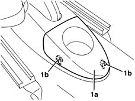

7040L22 REAR TRIM on TUNNEL -R.R.
- Path
- Procedures > 70 FITTINGS > 7040 BODYSHELL INTERIOR TRIMS AND FITTINGS > 7040L cabin floor covering > 7040L22 REAR TRIM on TUNNEL -R.R.
- Kind
- repair procedure (removal / refitting; the operation number is the code)
- Applies to
- all engines; all production periods
- Interactive page
- https://sloeber94.github.io/elrnDB-lYpsln/en/#/2429602
Applies to: all engines; all production periods
 Removing
Removing
 Refitting
Refitting1. Remove the trim (1a) releasig the retainers (1b).

Applies to: all engines; all production periods
Refitting
RemovingCheck that the cover is undamaged.
Fit the trim and fit the retainers.
Topics that link to this page (40)
- 1040A10 fuel tank - r + r and decant fuel
- 1040A14 fuel tank - r + r for replacement
- 1040B30 fuel delivery line - r r
- 1040B36 rear fuel delivery line - r r
- 1040B56 fuel return line - r r
- 1080E61 Fuel vapour PIPE from VAPOUR FILTER to INTERMEDIATE COUPLING - R.R.
- 1080E62 pipe from fuel vapour separator to solenoid - r r
- 2125C20 gearbox manual control support and lever - r + r for checking and replacement if necessary
- 2125C22 gear lever and mount - r r
- 2125C28 gear control lever - r r
- 2125C30 gear engagement cable - r r
- 3320B10 REAR. DRUM BRAKES - R.R.
- 3320B20 Rear brake shoe CYLINDER (one) left or right - Replace.
- 3340B74 RIGID PIPE from connector to rear brakes . (one), left or right - R.R.
- 3380A04 handbrake - check travel
- 3380A10 handbrake lever - r+r
- 3380A30 handbrake cable - r+r
- 4420D20 rear suspension axle -replace- includes r+r, check, parts transfer and bleeding
- 4450D14 hub axle pillar of one rear wheel, l/h or r/h - r+r with hub removed - includes bush replacement if necessary
- 4450D15 rear stub axle strut - r r
- 5010D27 upper mixed air temperature sensor (1), lh or rh - r r following electrical circuit check
- 5010D28 upper mixed air temperature sensor (1), lh or rh r r following electrical circuit check
- 5010D30 passenger compartment air temperature sensor - r+r following electrical wiring check operation
- 5020B10 heater control support - r+r
- 5020B28 air conditioner symbol light bulb/s - includes control panel r+r
- 5020B35 outdoor/recirculation air intake flap control cable - r r
- 5020B38 air distribution flap control cable - r+r
- 5020B42 air mixer flap control cable - r+r
- 5040C10 air conditioner box - r+r
- 5040D18 air conditioner control unit - r r
- 5040D20 air conditioner control switches/button unit - r r
- 5040D75 Air conditioning recirculation flap control MOTOR - R.R.
- 5505A25 SWITCH UNIT for OPTIONAL EQUIPMENT - R.R.
- 5550D18 handbrake on warning light switch - r+r
- 5580C22 AIR BAG MODULE - Passenger side - R.R.
- 7040A10 instrument facia trim - r+r
- 7040A25 central facia trim - r r
- 7040A28 TRIM on gearbox control panel - R.R.
- 7040L10 cabin floor carpet - r r
- 7040L20 tunnel trim - r r